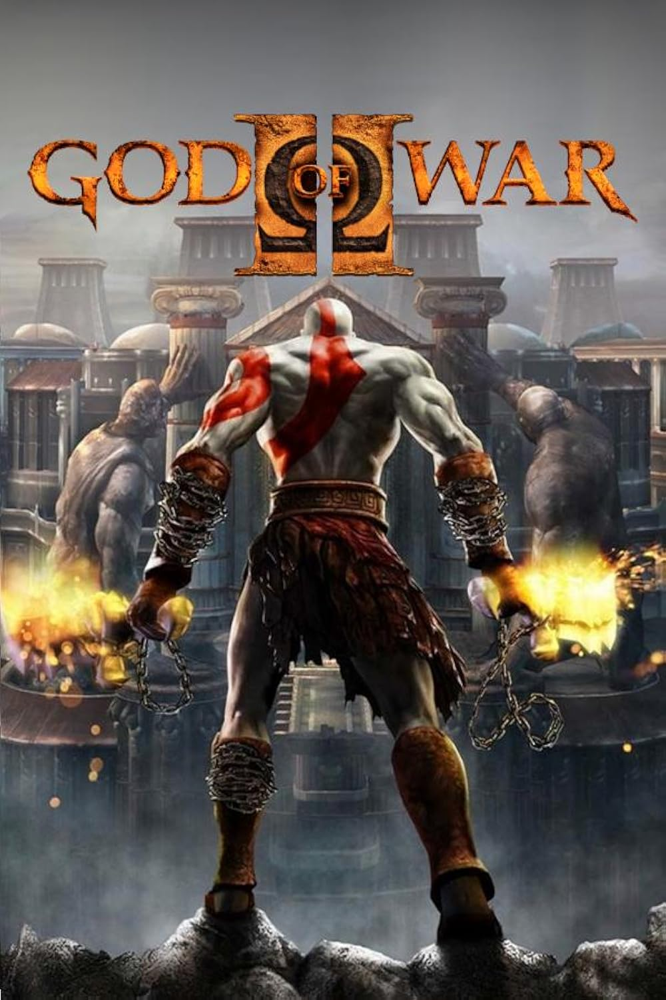

" Zeus! Your son has returned, I bring the destruction of Olympus!!! "
* Following the ending of God of War II, God of War III picks up directly after this with a stirring opening narration from Zeus discussing the actions of the rogue Kratos, the God of War, who is “commanding” a small army of Titans rescued from the Great War (using the Power of the Fates). The Olympians immediately rush to battle; Helios rides on his Chariot over Olympus, Hermes speeds down the very peaks of Olympus as Zeus watches on, Hercules receives the order to lead his troops down into the fray, Hades lunges off and engages several Titans in his Giant form, and Poseidon (using his aquakinesis) shoots down from Olympus like a missile and performs a death blow through the chest of Epimetheus, and then manifests himself as a massive water being and spawns several water horses called Hippocampi to aid in the battle. With Poseidon as their greatest threat in the battle, having already decimated numerous Titans and soon going after Gaia herself, Kratos engages the God of the Sea and after drawing him into Gaia's grasp, he manages to knock a weakened Poseidon out of his godly form and onto a separate platform. The two quarrel with each other briefly before Kratos walks up and beats the God of the Sea savagely, finally gouging out his eyes and snapping his neck before he tosses him into the ocean. With Poseidon's death, the sea's cataclysm and ocean levels rise significantly, causing a flood that appears to engulf the entire Greek World and destroying almost all of mankind on top of Olympia.
* After killing Poseidon, Kratos and Gaia reach Zeus' Pavilion, where the King of the Gods angrily anticipates Kratos' arrival and, at last, assaults them with a mighty blast of lightning that blows off a massive amount of Gaia's arm and sends the two spiraling down Olympus (Kratos survives presumably by using the Golden Fleece to absorb most of the blast). However, even using the Blade of Olympus to stab into her back, Kratos is unable to hang on as Gaia fights to survive and climb back up to Zeus. She warns him that he was only a pawn and is now expendable now that the Titans have reached Zeus, allowing the embittered Spartan to tumble to his death. Kratos contemplates his life as he lurches through the River Styx and its caverns, and resolves to escape Hades (once again) and destroy Zeus. On his way to Hades' chamber after being sucked of nearly all of his power from the dead souls of Styx, he reunites with a newly-formed Athena who claims to have reached a "new level of existence" and is willing to help Kratos resume his revenge, granting him new weapons to survive the Underworld and the foes that lie ahead, and also defining his next quest of finding and extinguishing the Flame of Olympus in order to truly defeat Zeus.
* Kratos makes his way through the Underworld meeting a couple of lost souls, encountering Statues of the Three Judges of the Underworld, meeting Hephaestus who informs him more and more about the secrets of Olympus and Zeus, and finding mysterious scrawls on the ground that he silently acknowledges to be from various people in his past. Finally entering Hades' Palace, he finds the coffin-wed body of Persephone that Hades had restored, and engages the God of the Underworld himself inside of a dark cavern. Hades matches Kratos until the bloodthirsty Spartan manages to rip off his Helmet and steal his weapons, and then ripping out Hades' own soul and absorbs it using the Claws of Hades. Escaping the Underworld through a Hyperion Gate, Kratos renews his journey up along Olympus except that he now faces both the Titans and the Gods - he encounters Helios on his Chariot where Kratos later rips the God of the Sun's head off with his bare hands and receives the Head of Helios, he 'amputates' the legs of Hermes acquiring the Boots of Hermes, mercilessly beats his own half-brother Hercules to death with the Nemean Cestus, breaks Hera's neck after she insults Pandora, a small childlike creation of Hephaestus who is the key to extinguishing the Flame of Olympus and revealing its contents, encountering a radiant Aphrodite and her handmaidens in the Goddess chamber, stabbing the Titan Cronos in the head with the Blades of Olympus at Tartarus, impaling Hephaestus after betraying Kratos to Cronos, receiving the Nemesis Whip from Hephaestus just before his death, battles Skorpius, The Queen of the Scorpions and finally arriving at the Flame's chamber with Pandora, only to be interrupted by Zeus himself.
* Zeus prevents Pandora from her destiny, where the battle between the God of War and the King of the Gods began, Kratos bests the King of the Gods in a duel and suddenly has a change of heart. Pandora was made to be the Key to Pandora's Box, which is what truly rests within the Flame of Olympus, and would have to sacrifice herself. However, due to inadvertent prodding from Zeus' pleads that Kratos not to "fail her like he failed his family", Kratos releases Pandora and attacks Zeus in extreme rage, only to be stunned by the Flame's dissipation. Kratos opens the Box once again, just as he had in the first game, only to discover that it is empty. Zeus mocks him for "another failure", and teleports outside in order to recover, while Kratos' rage grows even stronger. Both the father and son meet outside once again on a familiar platform, but before either can claim victory, the platform is suddenly shaken by a reawakened Gaia (believed to have been killed during the fight and subject of many Titans anger against Kratos), who violently shakes them and causes them to flee inside of her body. Inside of her chest, Kratos and Zeus duel near her heart; Zeus sucks her heart of her life and rejuvenates as Kratos does, and finally, Gaia is killed when Kratos impales Zeus against her heart, which apparently also killed Zeus. Awakening amidst the cracked Earth, Kratos finds Zeus' body impaled on a rock, and extracts the Blade of Olympus callously. However, when Kratos tries to leave, Zeus' still active spirit, consumed by some lasting hatred for his 'infidel' son, attacks and apparently drains Kratos of his willpower, his anger, and instead fills him with fear and a sense of loss whilst throwing him on the verge of death.
* Before dying, Kratos shares a last-minute mental journey with the guide of Pandora, whose spirit lives on within him, and begins abolishing the various things that torment his soul - the very things that the Astral Zeus is using to kill his mind, similar to what Ares once did. Overcoming these hurtles with a feeling of Hope, Kratos regains conscious and his godly powers back, and he forces Zeus' spirit back into his body, before beating Zeus to death with his bare hands, ending the reign of the Olympians once and for all as it seems. Athena arrives to congratulate Kratos on his victory and requests that he turn over the power he claimed from Pandora's Box, but he reveals that there was nothing inside. Athena claims he is lying, because when the Evils of the Titanomachy were first sealed into the Box, as a safety measure, she placed into the Box the "most powerful weapon in the World", Hope, to counteract the Evils. She demands Kratos return this power he obtained from the Box that rightfully belongs to her, for now that the World is cleansed by chaos, she will rebuild it under her rule with the Power of Hope. Athena realizes, however, that when Kratos first opened the Box to kill Ares, as the Evils infected and took hold of the Gods of Olympus, especially Zeus, the Power of Hope infused itself into Kratos.
* Hope had been buried deep beneath the anger, need for vengeance, and guilt, and when Kratos had finally learned to forgive himself for his past, he had released the power. Athena again demands Kratos give her the power, but Kratos refuses, insisting that he owes her nothing (a callback to the beginning of the second game) and impales himself with the Blade of Olympus. A large ray of blue light releases itself into the sky, giving all mankind the Power of Hope. Athena becomes furious, claiming that mankind will not know what to do with Hope. Athena, telling Kratos how disappointed she is by his actions, removes the Blade from Kratos' chest and departs, leaving the Ghost of Sparta to perish, ready to let death take him. In the post-credits scene, the spot where Kratos' body was lying is now empty, with a trail of blood leading away from the Blade of Olympus and going off the edge of a cliff showing a view of the destroyed world of Greece. Hinting that Kratos is still alive, but his final wherabouts are left unknown.
